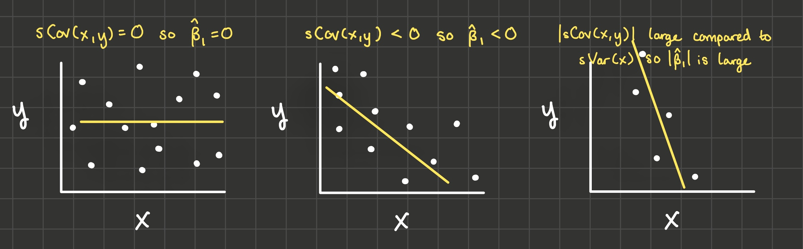

2 Exogeneity
2.1 Overview
What to expect in this chapter:
We’ll build more intuition about what OLS does in sections 2.2 and 2.3. In 2.2, we’ll see that \(\hat{\beta_1}\) is just the sample covariance of x and y divided by the sample variance of x. In 2.3 we’ll see that \(\hat{\beta_1}\) is also a weighted sum of the \(y_i\)’s, where observations far from \(\bar{x}\) have the largest weights.
In sections 2.4-2.7, we’ll discuss the key assumption for estimates \(\hat{\beta}\) to be unbiased (the assumption is called “exogeneity”).
OLS standard error derivation in section 2.8.
Definition. Exogeneity - the assumption that \(E[u_i | X] = 0\), where \(u_i\) is the unobserved term and \(X\) is all the explanatory variables in all observations. Exogeneity is not as strong an assumption as independence, but it’s stronger than zero covariance. The intuition is that when exogeneity holds, \(u\) is as good as random, conditioned on observables \(X\).
Definition. Standard Error - our estimate of the standard deviation of \(\hat{\beta}\). Under exogeneity, homoskedasticity, and no autocorrelation, the standard error for the slope parameter of a simple regression is: \(se(\hat{\beta_1}) = \sqrt{\frac{\sum_i e_i^2}{(n - 2) \sum_i (x_i - \bar{x})^2}}\).
2.2 Classwork 1 #1
We’ll pick up where we left off from chapter 1 with a formula for \(\hat{\beta_1}\) from a simple regression \(y_i = \beta_0 + \beta_1 x_i + u_i\):
\[\hat{\beta_1} = \frac{\sum_i (x_i y_i) - n \bar{x}\bar{y}}{\sum_i (x_i^2) - n \bar{x}^2}\]
In classwork 1, I asked you to take the formula above and show that:
\[\hat{\beta_1} = \frac{\sum_i (x_i - \bar{x}) (y_i - \bar{y}) }{\sum_i (x_i - \bar{x})^2}\]
Why did we do that? What insight about OLS does this give us?
Recall that the sample variance (I’ll invent some notation and use \(sVar\)) of the variable x is: \(sVar(x_i) = \frac{\sum_i (x_i - \bar{x})^2}{n - 1}\). And the sample covariance of x and y is \(sCov(x_i, y_i) = \frac{\sum_i (x_i - \bar{x})(y_i - \bar{y})}{n - 1}\).
So you can see that: \[\hat{\beta_1} = \frac{sCov(x_i, y_i)}{sVar(x_i)}\]
A couple of interesting things to point out about this formula:
If x and y don’t covary (that is, their sample covariance is 0), then we’d estimate the slope of the linear model to be 0 (see the drawing on the left in the image below).
If they covary negatively (when x is large, y is small and when x is small, y is large), then we’d estimate the slope of the linear model to be negative because the denominator is positive (variances are always positive). And if they covary positively, we’d estimate the slope of the lienar model to be positive. See the drawing in the middle in the image below.
The larger in magnitude the covariance of x and y is compared to the variance of x, the steeper the line of best fit is. See the drawing on the right in the image below.

2.3 Classwork 1 #2
The next thing we did in classwork 1 was to show:
\[\hat{\beta_1} = \frac{\sum_i (x_i - \bar{x}) y_i}{\sum_i (x_i - \bar{x})^2}\]
What intuition does this formula give us?
1: \(\hat{\beta_1}\) is a weighted sum of the yi’s
2: Numerical Example: calculate \(w_i\)
3: Numerical Example: calculate \(\hat{\beta_1}\)
4: Numerical Example: calculate \(\hat{\beta_1}\) with some different values for \(y_i\)
2.4 Classwork 1 #3
Finally in question 3, I had you derive a final formula for \(\hat{\beta_1}\):
\[\hat{\beta_1} = \beta_1 + \frac{\sum_i (x_i - \bar{x}) u_i}{\sum_i (x_i - \bar{x})^2}\]
Or if we let \(w_i = \frac{x_i - \bar{x}}{\sum_i (x_i - \bar{x})^2}\), then
\[\hat{\beta_1} = \beta_1 + \sum_i w_i u_i\]
Note that the \(\hat{\beta_1}\) on the left hand side refers to the estimate and the \(\beta_1\) on the right hand side refers to the true value of the effect of x on y. So this equation will give us some intuition about when the estimate may not be equal to the true value.
In particular, we’ll use this formula to show what assumptions are necessary for \(\hat{\beta_1}\) to be an unbiased estimator of \(\beta_1\): that is, \(E[\hat{\beta_1}] = \beta_1\). Taking the expectation of both sides of the equation above and recognizing that the true value of \(\beta_1\) is a constant:
\[E[\hat{\beta_1}] = \beta_1 + E[\sum_i w_i u_i]\]
And since the expectation of a sum is the same as the sum of the expectations because \(E[A + B] = E[A] + E[B]\):
\[E[\hat{\beta_1}] = \beta_1 + \sum_i E[w_i u_i]\]
In EC 320, you assumed that explanatory variables \(x\) were “predetermined”, “nonstochastic”, or “randomly assigned” like in a scientific experiment. For instance, \(x_i\) would take on 1 if the person was given the medication and \(x_i\) would take on 0 if the person was given a placebo. Then \(u_i\) absorbs the effect of any unobserved variable like “healthy habits”. Because \(x_i\) is randomized, we can assume x (medication or placebo) is independent of u (healthy habits). And since \(w_i\) is just a function of \(x\), then \(w\) would also be independent of \(u\). So by independence,
\[E[w_i u_i] = E[w_i] E[u_i]\]
And if we assume \(E[u_i] = 0\) (which is actually a freebie if our model contains an intercept because the intercept will absorb a nonzero expectation for u), then we get:
\[E[\hat{\beta_1}] = \beta_1 + \sum_i E[w_i] (0)\]
And \(\hat{\beta_1}\) is an unbiased estimator for \(\beta_1\):
\[E[\hat{\beta_1}] = \beta_1\]
But we don’t actually need to make such a strong assumption: x doesn’t have to be randomly assigned for OLS to unbiased. A slightly weaker assumption is all that is required: that assumption is called exogeneity: \(E[u_i | X] = 0\). Exogeneity is that the conditional expectation of \(u_i\) given all the explanatory variables across all the observations is zero. The intuition is that when exogeneity holds, \(u\) is as good as random, conditioned on observables \(X\).
Before we do the proof of the unbiasedness of \(\hat{\beta_1}\) under exogeneity, let’s talk a little about conditional expectations.
2.5 Conditional Expectations
2.6 Proof of the unbiasedness of \(\hat{\beta_1}\) under exogeneity
2.7 Exogeneity
Endogeneity of education in the education-wage model
Exogeneity of treatment in a randomized controlled trial
2.8 Standard Errors
So far, we’ve established that \(\hat{\beta_1}\) is a random variable where \(E[\hat{\beta_1}] = \beta_1\) when we have exogeneity: \(E[u_i | X] = 0\). What else can we say about the distribution of \(\hat{\beta_1}\)?
- \(\hat{\beta_1}\) is distributed normally if \(u_i\) is distributed normally. Why? \(\hat{\beta_1}\) is a weighted sum of \(u_i\):
\[\hat{\beta_1} = \beta_1 + \sum_i w_i u_i\]
And according to the Central Limit Theorem, that makes \(\hat{\beta_1}\) distributed normally.
- Under exogeneity, homoskedasticity, and no autocorrelation, the standard error of \(\hat{\beta_1}\) (our approximation of the standard deviation of \(\hat{\beta_1}\)) is \(\sqrt{\frac{\sum_i e_i^2}{(n-2)\sum_i (x_i - \bar{x})^2}}\). Here’s the proof of that:
\[\hat{\beta_1} = \beta_1 + \sum_i w_i u_i\]
Take the variance of both sides and recognize that \(\beta_1\) is a constant that has zero variance:
\[Var(\hat{\beta_1}) = Var\left(\sum_i w_i u_i\right)\]
Recall the definition of the variance of a random variable: \(Var(Z) = E\left[ \left (Z - E[Z] \right )^2 \right]\).
\[Var(\hat{\beta_1}) = E\left[(\sum_i w_i u_i - E[\sum_i w_i u_i])^2\right]\]
By exogeneity, we’ve already shown that \(E\left[\sum_i w_i u_i\right] = 0\).
\[Var(\hat{\beta_1}) = E\left[(\sum_i w_i u_i)^2\right]\]
Which “foils” to be:
\[Var(\hat{\beta_1}) = E\left[\sum_i w_i^2 u_i^2 + 2 \sum_i \sum_j w_i w_j u_i u_j\right]\]
An expected value of a sum is the same as the sum of the expected values:
\[Var(\hat{\beta_1}) = \sum_i E\left[w_i^2 u_i^2\right] + 2 \sum_i \sum_j E\left[w_i w_j u_i u_j\right]\]
We’re stuck unless we consider the conditional expectations instead of the unconditional ones. If we can show that the conditional expectations are constants, then the unconditional expectations are the same constants:
\[\sum_i E\left[w_i^2 u_i^2 | X\right] = \sum_i w_i^2 E[u_i^2 | X]\]
\[2 \sum_i \sum_j E\left[w_i w_j u_i u_j | X\right] = 2 \sum_i \sum_j w_i w_j E[u_i u_j | X]\]
Note: \(Var(u_i | X) = E\left[(u_i - E(u_i | X))^2 | X\right]\), and since we’re assuming exogeneity holds, \(Var(u_i | X) = E[u_i^2 | X]\). Here we make our next assumption called homoskedasticity: that \(Var(u_i | X)\) is a constant.
The same way, note that \(Cov(u_i, u_j | X) = E\left[(u_i - E[u_i | X])(u_j - E[u_j|X])|X\right]\), and with exogeneity, \(Cov(u_i, u_j | X) = E[u_i u_j]\). If we assume that \(u_i\) is not autocorrelated, we can assume \(Cov(u_i, u_j | X) = 0\). That will be our next big assumption.
So under these two assumptions of homoskedasticity and no autocorrelation,
\[Var(\hat{\beta_1}) = Var(u) \sum_i w_i^2 + 0\]
Since \(w_i = \frac{x_i - \bar{x}}{\sum_i (x_i - \bar{x})^2}\), we have \(\sum_i w_i^2 = \frac{1}{\sum_i (x_i - \bar{x})^2}\).
\[Var(\hat{\beta_1}) = \frac{Var(u)}{\sum_i (x_i - \bar{x})^2}\]
And the standard deviation of \(\hat{\beta_1}\) is the square root:
\[sd(\hat{\beta_1}) = \sqrt{\frac{Var(u)}{\sum_i (x_i - \bar{x})^2}}\]
There’s just one last problem: \(u\) is unobservable, so we can’t calculate \(Var(u)\) or \(sd(\hat{\beta_1})\) directly. Instead, we estimate \(sd(\hat{\beta_1})\) using \(sVar(e_i)\) as an approximation for \(Var(u)\), and the estimation of the standard deviation of \(\hat{\beta_1}\) is what we call the standard error of \(\hat{\beta_1}\).
The sample variance of residuals \(e_i\) is \(sVar(e_i) = \frac{\sum_i (e_i - \bar{e})^2}{n-1}\). Recall that \(\bar{e} = 0\). To estimate \(Var(u)\) using \(sVar(e_i)\), we lose another degree of freedom and divide by \(n-2\) instead of \(n-1\). So \(Var(u)\) is estimated by \(\frac{\sum_i e_i^2}{n - 2}\). Thus:
\[se(\hat{\beta_1}) = \sqrt{\frac{\sum_i e_i^2}{(n - 2) \sum_i (x_i - \bar{x})^2}}\]
2.9 Summary
In this chapter we learned:
- \(\hat{\beta_1} = \frac{sCov(x_i, y_i)}{sVar(x_i)}\)
- \(\hat{\beta_1} = \sum_i w_i y_i\): observations far from \(\bar{x}\) are the ones that determine the estimate of the effect of x on y.
- \(\hat{\beta_1} = \beta_1 + \sum_i w_i u_i\): exogeneity (\(E[u_i | X] = 0\)) is the key assumption for \(\hat{\beta_1}\) to be unbiased. Exogeneity is met in randomized experiments, but it’s violated when there is omitted variable bias.
- Finally, \(se(\hat{\beta_1}) = \sqrt{\frac{\sum_i e_i^2}{(n - 2) \sum_i (x_i - \bar{x})^2}}\) under exogeneity, homoskedasticity, and no autocorrelation.
2.10 Exercises
Now that we can calculate standard errors, we can do hypothesis tests:
2.11 References
Dougherty (2016) Chapter 1: Simple Regression Analysis
Dougherty (2016) Chapter 8: Stochastic Regressors and Measurement Errors